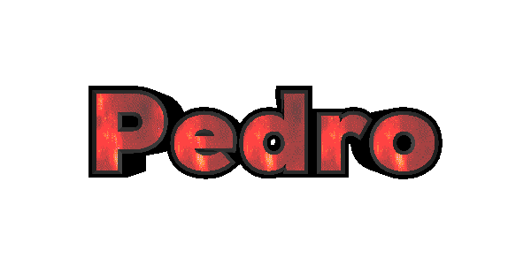
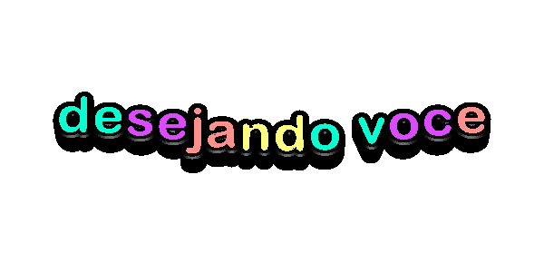
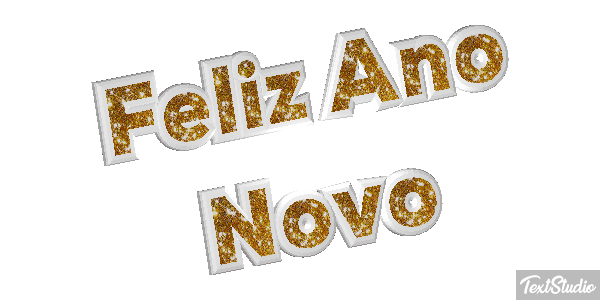
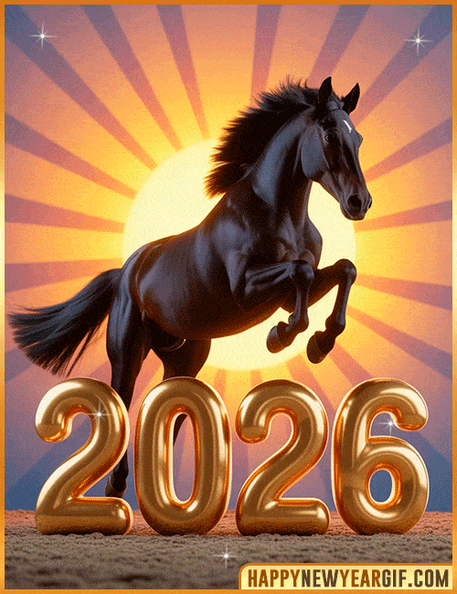
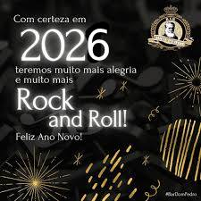

Que o novo ano ✨ chegue leve 🍃,
com risos fáceis 😄 e abraços sinceros 🤗
Que os sonhos 😴 encontrem coragem 🌱
e os dias ☀️, bons motivos pra brindar 🥂
Feliz Ano Novo 🎆, amigos 🫂,
que a gente siga junto 👭, seja onde for 💫

Que este novo ano seja, sobretudo, um ano tranquilo. Como as águas do rio sereno que desaguam no infinito dos mares, assim seja a caminhada em busca do sucesso. Sem pressa de chegar e com coragem para encarar os muitos desafios que virão.
De todas as coisas, desejo que haja paz de espírito, paz no coração, em cada decisão. Que a paz reine em cada canto que pisarem os nossos pés. Abaixem as armas. Levantem a bandeira do amor; que estende a mão, que acolhe, que une vidas, que não se contamina com o ódio e com a maldade.
Que não nos falte amor. Amor para aceitar, respeitar e discordar, pois é um direito. Amor para aconselhar, amor para abraçar, amor para corrigir. Amor para amar quem nos odeia e para aceitar as críticas. E por falar em amar: que o verbo se torne prática diária. Menos declarações públicas que aparentam ser o que não é, menos telefonemas desligados na cara, menos orgulho, menos brigas, menos partidas.
Que o sujeito de tantos predicados no Facebook, seja também elogiado na vida real, entre amigos, no trabalho, no lar. Mais demonstrações com atitude, mais encontros, mais risadas e sorrisos bobos, mais chegadas e reconciliações.
Que as amizades sejam verdadeiras e que saibamos reconhecê-las. Que não nos deixemos ser influenciados pelos maus costumes, mas que o nosso pensamento maduro, o nosso falar com sabedoria, o nosso andar em retidão e o nosso agir com integridade influencie todos ao nosso redor.
Que não nos falte fé, esperança, saúde, força, disposição, respeito, solidariedade, compaixão, e desejo de sermos pessoas melhores para nós mesmos e para os outros. Que tenhamos maturidade para deixar "as coisas velhas" para trás, esquecer o que é passado, aprender com os erros e não mais cometê-los. Que saibamos tomar as decisões certas nas diversas áreas e momentos da nossa vida. Na escola, na faculdade, no trabalho, no relacionamento, no voto, nos investimentos.
Que possamos entender o nosso papel como cidadãos. Seja no simples ato de guardar o lixo no bolso até encontrar uma lixeira, ou no importante compromisso que temos de eleger uma autoridade. Por fim, que sejamos gratos em tudo, inclusive nas perdas, sejam elas de um ente, de uma "amizade" desfeita ou de bens materiais.
Lembre-se: o que tem um coração grato, encontrou a felicidade e o prazer de simplesmente estar vivo; o que aprendeu a ser feliz no pouco, é, na verdade, dono da maior riqueza, que é invisível aos olhos humanos. Fortunas não compram, e ladrões não podem roubar.
Um feliz ano novo, cheio de realizações e bençãos incontáveis a todos!
